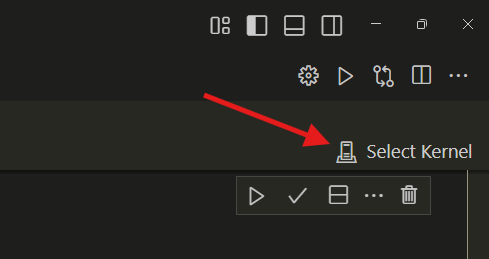
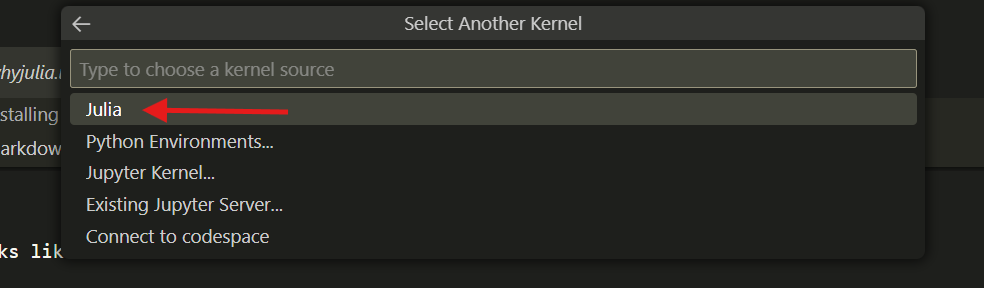
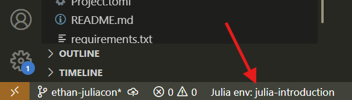
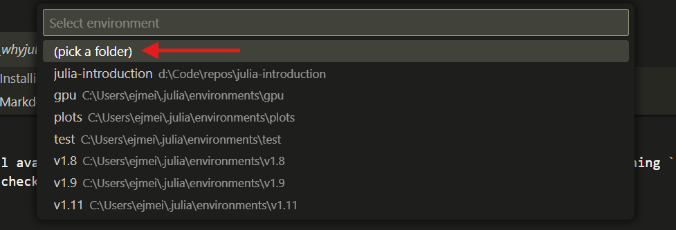

Installing Julia#
We will install Julia using the juliaup version manager. To install juliaup run:
Windows:#
winget install --name Julia --id 9NJNWW8PVKMN -e -s msstore
Mac/Linux/FreeBSD:#
curl -fsSL https://install.julialang.org | sh
This will install the latest version of Julia by default. You can view all the installed julia versions by running (for you just one):
juliaup status
For me this looks like:
C:\Users\ejmei>juliaup status
Default Channel Version Update
-------------------------------------------------------------------------------------------
1.10 1.10.7+0.x64.w64.mingw32 Update to 1.10.10+0.x64.w64.mingw32 available
* 1.11 1.11.2+0.x64.w64.mingw32 Update to 1.11.5+0.x64.w64.mingw32 available
release 1.11.2+0.x64.w64.mingw32 Update to 1.11.5+0.x64.w64.mingw32 available
The * indicates the currently active version of Julia. You can switch the default by running juliaup default <channel>. For example,
juliaup default 1.11
We can list all available versions of Julia with juliaup list and choose one to install by running juliaup add <channel>. For more commands or non-default installations checkout the juliaup GitHub page.
Download Lesson Materials#
The raw Jupyter notebooks for this tutorial can be installed from the GitHub page or by clicking one of the specific links:
Environment Setup#
If you wish to run the Juptyer notebooks locally, you will need to have Julia, VSCode, and Jupyter Notebook. Furthermore, we require the IJulia package, and two VSCode extensions: Julia extension and Jupyter extension.
Install IJulia#
IJulia is a Julia package which automatically installs Julia as a Jupyter kernel. This package should generally be installed in Julia’s global package environment. To do so, open the Julia REPL by typing julia in the command prompt that you installed juliaup into. By default, the initial environment is the correct one. Install IJulia by running:
using Pkg
Pkg.add("IJulia")
This might take a few minutes to finish. Once it’s complete you can test by running:
using IJulia
notebook()
Activate the Kernel#
Open VSCode and ensure that the Jupyter and Julia extensions are installed. Next, open one of the Jupyter notebooks from the tutorial.
If the Julia kernel is not automatically detected, click the Select Kernel button and then choose Julia from the dropdown and choose your desired Julia kernel.


Install Dependencies#
Some of the notebooks require external packages to run, so we have to download those and tell VSCode where to find them by activating the proper environment. To do this, first install the Project.toml from the GitHub repo:
Place this in the same directory as your jupyter notebooks. If the Julia VSCode extension is running, you will see a button to select the environment in the bottom left of VSCode. 
Click this button and then choose (pick a folder) or, if auto-detected, the correct environment. The first time you use an environment, Julia must download and precompile all of your packages. It should only take a minute or two.

You should be all set now!